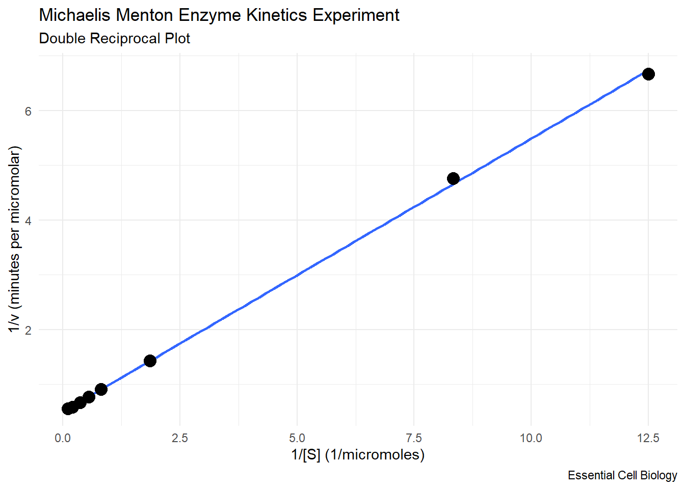

library("gt") #great tables
library("HistData") #historical data sets
library("tidyverse") #tools for data wrangling and visualization
liquor_df <- data.frame(
year = 2014:2022,
LLV = c(129, 54, 103, 50, 15, 10, 18, 49,57)
)
MM_df <- data.frame(
S = c(0.08, 0.12, 0.54, 1.23, 1.82, 2.72, 4.94, 10.00),
v = c(0.15, 0.21, 0.7, 1.1, 1.3, 1.5, 1.7, 1.8)
)SML 201
Start
Goal: Make predictions
Objective: Perform linear regression and compute coefficients of determination

- image source: XKCD
Campus Example
The following data on judicial referrals for liquor law violations come from the Princeton University Annual Security and Fire Safety Report (in and around the main campus)
| Liquor Law Violiations | |
|---|---|
| (judicial referrals) | |
| year | LLV |
| 2014 | 129 |
| 2015 | 54 |
| 2016 | 103 |
| 2017 | 50 |
| 2018 | 15 |
| 2019 | 10 |
| 2020 | 18 |
| 2021 | 49 |
| 2022 | 57 |
| Princeton University, Main Campus | |
liquor_df |>
gt() |>
cols_align(align = "center") |>
tab_footnote(footnote = "Princeton University, Main Campus") |>
tab_header(
title = "Liquor Law Violiations",
subtitle = "(judicial referrals)"
) |>
tab_style(
style = cell_text(weight = "bold"),
locations = cells_column_labels()
) |>
data_color(
columns = LLV,
target_columns = everything(),
palette = "inferno",
reverse = FALSE
)Linear Regression in R
- response variable (y):
LLV - explanatory variable (x):
year
lin_fit <- lm(LLV ~ year, data = liquor_df)In a model equation, the tilde ~ is read as “explained by”. In this model, we can say that the response variable LLV is explained by the year.
Prediction in R
We use the predict function where the input is a data frame. In this example, we are predicting the number of judicial referrals for liquor law violations in the year 2023.
yhat <- predict(lin_fit,
newdata = data.frame(year = 2023))Validation
In this simple example, we know the true answer: there were 262 judicial referrals for liquor law violations in the year 2023
# true value
y <- 262# absolute error
abs(y - yhat) 1
250.8611 # relative error
abs(y - yhat) / y 1
0.9574852 Why was the prediction so inaccurate?
SSE
Scatterplot
It is a good idea to look at the data (when practical).
liquor_df |>
ggplot() +
geom_point(aes(x = factor(year), y = LLV),
size = 4, color = "black") +
labs(title = "Liquor Law Violations",
subtitle = "Princeton University, main campus",
caption = "SML 201",
x = "year", y = "judicial referrals") +
theme_minimal()Smooth
On the visual size, linear regression summarizes a scatterplot.
liquor_df |>
ggplot(aes(x = year, y = LLV)) +
geom_point(size = 4, color = "black") +
geom_smooth(formula = "y ~ x", method = "lm", se = FALSE,
color = "blue", linewidth = 2) +
labs(title = "Liquor Law Violations",
subtitle = "Princeton University, main campus",
caption = "SML 201",
x = "year", y = "judicial referrals") +
theme_minimal()Centroid
Claim: a linear regression model goes through the centroid
\[(\bar{x}, \bar{y})\]
xbar <- mean(liquor_df$year)
ybar <- mean(liquor_df$LLV)
liquor_df |>
ggplot(aes(x = year, y = LLV)) +
geom_point(size = 4, color = "black") +
geom_vline(xintercept = xbar, color = "green") +
geom_hline(yintercept = ybar, color = "green") +
geom_smooth(formula = "y ~ x", method = "lm", se = FALSE,
color = "blue", linewidth = 2) +
labs(title = "Linear Regression",
subtitle = "A linear regression model goes through the centroid ",
caption = "SML 201",
x = "year", y = "judicial referrals") +
theme_minimal()Vector Space
How was the line drawn?

Linear Model
\[\hat{y} = a + bx\]
- \(\hat{y}\): predicted value
- \(a\): intercept
- \(b\): slope
Residuals
A residual is the difference between a predicted value and its true value.
liquor_df <- liquor_df |>
mutate(predictions = predict(lin_fit,
newdata = data.frame(year = liquor_df$year)),
residuals = predictions - LLV)liquor_df |>
ggplot(aes(x = year, y = LLV)) +
geom_segment(aes(x = year, y = predictions,
xend = year, yend = LLV),
color = "purple", linewidth = 3) +
geom_point(size = 4, color = "black") +
geom_smooth(formula = "y ~ x", method = "lm", se = FALSE,
color = "blue", linewidth = 2) +
geom_point(aes(x = year, y = predictions),
color = "red", size = 4) +
labs(title = "Linear Regression",
subtitle = "black: true values\nred: predictions\npurple: residuals",
caption = "SML 201",
x = "year", y = "judicial referrals") +
theme_minimal()
Corollary: Residual Balance
Claim: the average of the residuals is zero
mean(liquor_df$residuals)[1] 1.616879e-12Method of Least Squares
Idea: The best-fit line is where the sum-of-squared residuals is minimized.
\[E(a,b) = \sum_{i=1}^{n} (y_{i} - a - bx_{i})^{2}\]
Claim: \[a = \frac{ (\sum y_{i})(\sum x_{i}^{2}) - (\sum x_{i})(\sum x_{i}y_{i}) }{ n\sum x_{i}^{2} - (\sum x_{i})^{2} }, \quad b = \frac{ n\sum x_{i}y_{i} - (\sum x_{i})(\sum y_{i}) }{ n\sum x_{i}^{2} - (\sum x_{i})^{2} }\]
(optional) Proof
Search for a critical point by setting the partial derivatives (along with the Chain Rule) equal to zero.
\[0 = \frac{\partial E}{\partial a} = -2\sum_{i = 1}^{n} (y_{i} - a - bx_{i}) = 2an + 2b\sum_{i = 1}^{n}x_{i} - 2\sum_{i = 1}^{n} y_{i}\] \[0 = \frac{\partial E}{\partial b} = -2\sum_{i = 1}^{n} (y_{i} - a - bx_{i})x_{i} = 2a\sum_{i = 1}^{n}x_{i} + 2b\sum_{i = 1}^{n}x_{i}^{2} - 2\sum_{i = 1}^{n} x_{i}y_{i}\]
Create a matrix system of equations.
\[\left[ \begin{array}{cc} n & \sum_{i = 1}^{n}x_{i} \\ \sum_{i = 1}^{n}x_{i} & \sum_{i = 1}^{n}x_{i}^{2} \\ \end{array}\right] \left[ \begin{array}{c} a \\ b \end{array}\right] = \left[ \begin{array}{c} \sum_{i = 1}^{n} y_{i} \\ \sum_{i = 1}^{n} x_{i}y_{i} \end{array}\right] \]
Employ a matrix inverse.
$$ \[\begin{array}{rcl} \left[ \begin{array}{c} a \\ b \end{array}\right] & = & \left[ \begin{array}{cc} n & \sum_{i = 1}^{n}x_{i} \\ \sum_{i = 1}^{n}x_{i} & \sum_{i = 1}^{n}x_{i}^{2} \\ \end{array}\right]^{-1}\left[ \begin{array}{c} \sum_{i = 1}^{n} y_{i} \\ \sum_{i = 1}^{n} x_{i}y_{i} \end{array}\right] \\ ~ & ~ & ~ \\ \left[ \begin{array}{c} a \\ b \end{array}\right] & = & \frac{1}{n\sum x_{i}^{2} - (\sum x_{i})^{2}} \left[ \begin{array}{cc} \sum_{i = 1}^{n}x_{i}^{2} & -\sum_{i = 1}^{n}x_{i} \\ -\sum_{i = 1}^{n}x_{i} & n \\ \end{array}\right] \left[ \begin{array}{c} \sum_{i = 1}^{n} y_{i} \\ \sum_{i = 1}^{n} x_{i}y_{i} \end{array}\right] \\ ~ & ~ & ~ \\ \left[ \begin{array}{c} a \\ b \end{array}\right] & = & \frac{1}{n\sum x_{i}^{2} - (\sum x_{i})^{2}} \left[ \begin{array}{c} (\sum y_{i})(\sum x_{i}^{2}) - (\sum x_{i})(\sum x_{i}y_{i}) \\ n\sum x_{i}y_{i} - (\sum x_{i})(\sum y_{i}) \end{array}\right] \\ \end{array}\]$$
LM
\[\hat{y} = a + bx\]
lm(LLV ~ year, data = liquor_df)
Call:
lm(formula = LLV ~ year, data = liquor_df)
Coefficients:
(Intercept) year
17307.79 -8.55 For every increase in year, the number of judicial referrals decreases by 8.55.
Prediction
Predict the number of judicial referrals for liquor law violations in the year 2023.
a <- summary(lin_fit)$coefficients[1]
b <- summary(lin_fit)$coefficients[2]
a + b*(2023)[1] 11.13889predict(lin_fit, newdata = data.frame(year = 2023)) 1
11.13889 Coefficient of Determination
We want a measurement that can assure us of how useful a model will be for predictions.
Definition
The coefficient of determination is defined as
\[R^{2} = \frac{\text{explained variance}}{\text{total variance}}\]
For analysis of variance:
- explained variation: \(\sum(\hat{y} - \bar{y})^{2}\)
- unexplained variation: \(\sum(y - \hat{y})^{2}\)
- total variation = explained variation + unexplained variation \[\sum(y - \bar{y})^{2} = \sum(\hat{y} - \bar{y})^{2} + \sum(y - \hat{y})^{2}\]
Inference
Why is that denoted “\(R^2\)”? For linear regression, the coefficient of determination is literally the square of the correlation coefficient (\(r\))
- correlation \(-1 \leq r \leq 1\) implies coefficient of determination \[0 \leq R^{2} \leq 1\]
- want more “explained variation”, thus higher \(R^{2}\) means a better model
Guidelines
In this course, we will simply follow the Pearson suggestions for interpreting coefficient of determination values:
- \(0 \leq R^{2} < 0.4\): poor model
- \(0.4 \leq R^{2} < 0.7\): good model
- \(0.7 \leq R^{2} \leq 1.0\): great model

Model Statistics
In R, we can use summary to access model statistics.
summary(lin_fit)
Call:
lm(formula = LLV ~ year, data = liquor_df)
Residuals:
Min 1Q Median 3Q Max
-38.89 -25.54 -12.44 32.01 40.91
Coefficients:
Estimate Std. Error t value Pr(>|t|)
(Intercept) 17307.789 9047.707 1.913 0.0973 .
year -8.550 4.483 -1.907 0.0982 .
---
Signif. codes: 0 '***' 0.001 '**' 0.01 '*' 0.05 '.' 0.1 ' ' 1
Residual standard error: 34.73 on 7 degrees of freedom
Multiple R-squared: 0.3419, Adjusted R-squared: 0.2479
F-statistic: 3.637 on 1 and 7 DF, p-value: 0.09819Here in SML 201, we will use the “Adjusted R-squared” value that accounts for the number of predictor variables. Treat negative adjusted R-squared values simply as zero variation explained, and then look for the highest adjusted R-squared values.
summary(lin_fit)$adj.r.squared[1] 0.2478815Historical Example
Francis Galton
1822 - 1911
cousin of Charles Darwin
correlation discovery
- 1846: August Bravais
- 1888: Francis Galton
Do tall parents have tall children?
The Galton data set in the HistData package has two variables
- parents’ height (see documentation for weighted formula)
- child’s height
for about 200 families
heredity_df <- HistData::GaltonScatterplot
heredity_df |>
ggplot(aes(x = parent, y = child)) +
geom_point() +
geom_smooth(formula = "y ~ x", method = "lm", se = FALSE) +
labs(title = "Do tall parents have tall children?",
subtitle = "Galton Survey of Heights",
caption = "SML 201",
x = "parent's heights (weighted average)",
y = "child's height") +
theme_minimal()Linear Model
lin_fit <- lm(child ~ parent, data = heredity_df)
# slope
summary(lin_fit)$coefficients[2][1] 0.6462906For every one inch increase in parents’ height, the child’s height increases by about 0.65 inches.
Prediction
If the parents are 69 inches in height, what do we predict for the height of the child?
predict(lin_fit, newdata = data.frame(parent = 69)) 1
68.53558 If the parents are 58 inches in height, what do we predict for the height of the child?
predict(lin_fit, newdata = data.frame(parent = 58)) 1
61.42638 Regression to the Mean
In these early studies of heredity, Galton coined the phrase
\[\text{regression to the mean}\]
and similar calculations have been called regression ever since.
Chemistry Example
Michaelis and Menton
Leonor Michaelis
- Berlin University (1897)
Maud Menton
- University of Toronto (1911)
Die Kinetik der Invertinwirkung (1913)
\[v = \frac{V_{\text{max}}[S]}{K_{m} + [S]}\]
- \(v\): reaction rate (micromolars per minute)
- \([S]\): substrate concentration (micromolars)
Enzyme Kinetics
The reaction rates of the reaction S \(\rightarrow\) P catalyzed by enzyme E were determined under conditions such that only very little product was formed. Compute the maximum reaction velocity asymptote \(V_{\text{max}}\) and the Michaelis-Menton constant \(K_{m}\)
| Michaelis Menton Experiment | |
|---|---|
| reaction rate vs substrate concentration | |
| S | v |
| 0.08 | 0.15 |
| 0.12 | 0.21 |
| 0.54 | 0.70 |
| 1.23 | 1.10 |
| 1.82 | 1.30 |
| 2.72 | 1.50 |
| 4.94 | 1.70 |
| 10.00 | 1.80 |
| Die Kinetik der Invertinwirkung | |
Scatterplot
- reaction rate (lower case v)
- substrate concentration (capital S)
MM_df |>
ggplot(aes(x = S, y = v)) +
geom_smooth(formula = "y ~ x", method = "loess", se = TRUE) +
geom_point(color = "black", size = 4) +
labs(title = "Michaelis Menton Enzyme Kinetics Experiment",
subtitle = "reaction rate vs substrate concentration",
caption = "Essential Cell Biology",
x = "substrate concentration (micromolars)",
y = "reaction rate (micromolars per minute)") +
theme_minimal()Transformation
Hans Lineweaver (George Washington Univ., 1934)
\[v = \frac{V_{\text{max}}[S]}{K_{m} + [S]} \quad\rightarrow\quad \frac{1}{v} = \frac{K_{m}}{V_{\text{max}}} \cdot \frac{1}{[S]} + \frac{1}{V_{\text{max}}}\]
The reciprocal of the reaction rate is linear with respect to the reciprocal of the substrate concentration.
Double-Reciprocal Plot
MM_df <- MM_df |>
mutate(rS = 1/S,
rv = 1/v)MM_df |>
ggplot(aes(x = rS, y = rv)) +
geom_smooth(formula = "y ~ x", method = "lm", se = FALSE) +
geom_point(color = "black", size = 4) +
labs(title = "Michaelis Menton Enzyme Kinetics Experiment",
subtitle = "Double Reciprocal Plot",
caption = "Essential Cell Biology",
x = "1/[S] (1/micromoles)",
y = "1/v (minutes per micromolar)") +
theme_minimal()
Linear Model
lin_fit <- lm(rv ~ rS, data = MM_df)Coefficient of Determination
summary(lin_fit)$adj.r.squared[1] 0.9995051Extracting the Constants
slope <- lin_fit$coefficients[2]
intercept <- lin_fit$coefficients[1]
Vmax <- 1/intercept
Km <- slope * Vmax
print(paste("The Vmax asymptote is ", Vmax))[1] "The Vmax asymptote is 1.9894653306508"print(paste("The Michaelis-Menton constant is ", Km))[1] "The Michaelis-Menton constant is 0.991986524114476"MM Experiment Revisited
MM_df |>
ggplot(aes(x = S, y = v)) +
geom_smooth(formula = "y ~ x", method = "loess", se = TRUE) +
geom_point(color = "black", size = 4) +
geom_abline(slope = Km, intercept = 0, color = "red") +
geom_abline(slope = 0, intercept = Vmax, color = "purple") +
labs(title = "Michaelis Menton Enzyme Kinetics Experiment",
subtitle = "maximum reaction velocity asymptote (purple)\nMichaelis-Menton constant (red slope)",
caption = "Essential Cell Biology",
x = "substrate concentration (micromolars)",
y = "reaction rate (micromolars per minute)") +
theme_minimal()
Quo Vadimus?
Continue to complete BLTs and precept assignments
Project 1:
- Assigned! Sept 23
- Due: Oct 2
Exam 1: Oct 10
Refer to weekly announcement for more info

- image source: XKCD
Footnotes
(optional) Additional Resources
Session Info
sessionInfo()R version 4.4.1 (2024-06-14 ucrt)
Platform: x86_64-w64-mingw32/x64
Running under: Windows 10 x64 (build 19045)
Matrix products: default
locale:
[1] LC_COLLATE=English_United States.utf8
[2] LC_CTYPE=English_United States.utf8
[3] LC_MONETARY=English_United States.utf8
[4] LC_NUMERIC=C
[5] LC_TIME=English_United States.utf8
time zone: America/New_York
tzcode source: internal
attached base packages:
[1] stats graphics grDevices utils datasets methods base
other attached packages:
[1] lubridate_1.9.3 forcats_1.0.0 stringr_1.5.1 dplyr_1.1.4
[5] purrr_1.0.2 readr_2.1.5 tidyr_1.3.1 tibble_3.2.1
[9] ggplot2_3.5.1 tidyverse_2.0.0 HistData_0.9-1 gt_0.11.0
loaded via a namespace (and not attached):
[1] sass_0.4.9 utf8_1.2.4 generics_0.1.3 xml2_1.3.6
[5] lattice_0.22-6 stringi_1.8.4 hms_1.1.3 digest_0.6.35
[9] magrittr_2.0.3 evaluate_0.24.0 grid_4.4.1 timechange_0.3.0
[13] RColorBrewer_1.1-3 fastmap_1.2.0 Matrix_1.7-0 jsonlite_1.8.8
[17] mgcv_1.9-1 fansi_1.0.6 viridisLite_0.4.2 scales_1.3.0
[21] cli_3.6.2 rlang_1.1.4 munsell_0.5.1 splines_4.4.1
[25] withr_3.0.1 yaml_2.3.8 tools_4.4.1 tzdb_0.4.0
[29] colorspace_2.1-1 vctrs_0.6.5 R6_2.5.1 lifecycle_1.0.4
[33] htmlwidgets_1.6.4 pkgconfig_2.0.3 pillar_1.9.0 gtable_0.3.5
[37] glue_1.7.0 xfun_0.44 tidyselect_1.2.1 rstudioapi_0.16.0
[41] knitr_1.48 farver_2.1.2 nlme_3.1-164 htmltools_0.5.8.1
[45] rmarkdown_2.27 labeling_0.4.3 compiler_4.4.1
Example Callout Block
note, tip, warning, caution, or important